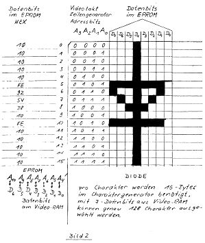
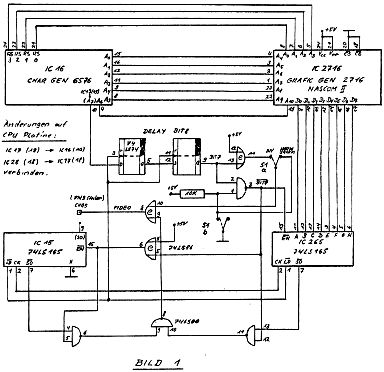

Nascom Journal |
Januar 1982 · Ausgabe 1 |
jeder der 14 Zeilen eine Eingabe erwartet. Wird das „*“ an einer Stelle stehen gelassen so bedeutet dies Bit=„1“, wird es dagegen gelöscht so bedeutet dies BIT=„0“.
Nach den 14 Eingaben ist das Muster aus dem Bildschirm direkt in den Speicher ab Adresse (K2+Zeichenadresse) übertragen und kann von dort direkt in ein EPROM geschrieben werden.
Auch hier muß die Adresse K2 außerhalb des von Basic benutzten Speicherbereiches liegen.

|

(Es wäre noch darauf hinzuweisen, daß der Nascom 2 nur 14 der 16 Punktreihen abbildet. Ein Maschinenprogramm zum Ausdrucken des Zeichenvorrats finden Sie in Heft 10-81 des Nascom Journals. Red.)
Clemens Ballarin, _______ ___._, ____ Überlingen, _____/_____ – Günter Böhm, siehe Impressum – Bernd im Brahm, _________ __, ____ Wickede/Ruhr – Eberhard Horch, ________ ___._, ____ Hannover __ – Günter Kreidl, siehe Impressum – Johannes Christian Lotter, ____________. __/___, ____ Darmstadt, _____/_____ – Wolfgang Mayer-Gürr, siehe Impressum – Klaus Mombaur, _________ __, ____ Nürnberg __ – Dieter Oberle, ________.__, ____ Vollmersweiler – Christian Peter, _________._/__/_, A____ Wien – Hans-Martin Pohl, ____________.__, ____ Stuttgart _, ____/______ – Peter Urban, __________.__, ____ Niefern _, _____/_____ – H.J.Winter, _________. __, ____ Landau – und virtuos am Typenraddrucker: Gabi Böhm –
Die Autoren tragen die Verantwortung für ihre Beiträge selbst.
Artikel, die besonders durch einen Copyright-Vermerk gekennzeichnet sind, dürfen nicht nachgedruckt oder anderweitig vervielfältigt werden ohne schriftliche Genehmigung des Verlags oder des Authors. Alle anderen Artikel dürfen für jeden unkommerziellen Zweck veröffentlicht werden, vorausgesetzt, es wird als Quelle das Nascom Journal angegeben.
| Seite 22 von 35 |
|---|